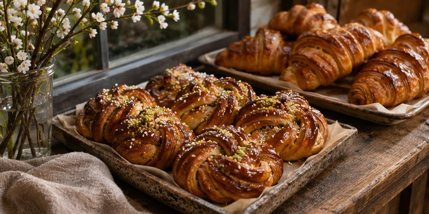

Country sourdough
A crackly crust, an open crumb, and a mild tang. Baked daily.

THE NEIGHBORHOOD BAKEHOUSE
Slow-fermented loaves, flaky pastries, and a little something warm for the walk home.
Explore the menuThe bakery counter
Our loaves take two days from mix to bake. Pastries rotate with the season, and the counter is usually fullest in the morning.

Come by
Stop in for a loaf, a pastry, and coffee to go. Use the sample preorder below if you want to see how a bakery could set aside your favorites.
Choose a bake and a pickup window. The preview shows your estimated total.
This demo accepts no payments or orders.
For this sample menu, choose a pickup window for the next open day. Large orders typically need two days’ notice.
The bakery handles wheat, dairy, eggs, and nuts. Ask about ingredients before ordering if you have an allergy.
Yes. The counter has a daily selection until it sells out.